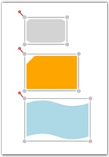
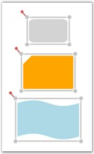
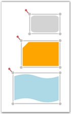
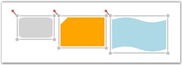
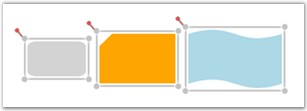
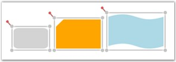

Alignment commands enable you to align selected objects (nodes and connectors) on a page with respect to a reference object. The first object in the selection is considered the reference object.
The following alignment commands are used to align objects.
Left Alignment
The AlignLeft command aligns all selected objects along the left corner of the reference object.
|
[C#]
DiagramCommandManager.AlignLeft.Execute(diagramView.Page, diagramView); |
|
[VB]
DiagramCommandManager.AlignLeft.Execute(diagramView.Page, diagramView) |
The following screen shot illustrates how the last two nodes are aligned to the left with respect to the first node.

Figure 154: AlignLeft command applied to Diagram Objects
Center Alignment (Horizontal Axis)
The AlignCenter command aligns all selected objects to the center. This command center-aligns selected objects with respect to the horizontal axis, i.e., by changing the x-coordinate of the object.
|
[C#]
DiagramCommandManager.AlignCenter.Execute(diagramView.Page, diagramView); |
|
[VB]
DiagramCommandManager.AlignCenter.Execute(diagramView.Page, diagramView) |
The following screen shot illustrates how the last two nodes are aligned to the center with respect to the horizontal axis of the first node.

Figure 155: AlignCenter command applied to Diagram Objects
Right Alignment
The AlignRight command aligns all selected objects along the right corner of the reference object.
|
[C#]
DiagramCommandManager.AlignRight.Execute(diagramView.Page, diagramView); |
|
[VB]
DiagramCommandManager.AlignRight.Execute(diagramView.Page, diagramView) |
The following screen shot illustrates how the last two nodes are aligned to the right with respect to the first node.

Figure 156: AlignRight command applied to Diagram Objects
Top Alignment
The AlignTop command aligns all selected objects along the top surface of the reference object.
|
[C#]
DiagramCommandManager.AlignTop.Execute(diagramView.Page, diagramView); |
|
[VB]
DiagramCommandManager.AlignTop.Execute(diagramView.Page, diagramView) |
The following screen shot illustrates how the last two nodes are aligned to the top with respect to the first node.

Figure 157: AlignTop command applied to Diagram Objects
Center Alignment (Vertical Axis)
The AlignMiddle command aligns all selected objects at the center. This command center-aligns selected objects with respect to the vertical axis, i.e., by changing the y-coordinate of the object.
|
[C#]
DiagramCommandManager.AlignMiddle.Execute(diagramView.Page, diagramView); |
|
[VB]
DiagramCommandManager.AlignMiddle.Execute(diagramView.Page, diagramView) |
The following screen shot illustrates how the last two nodes are aligned to the center with respect to the vertical axis of the first node.

Figure 158: AlignMiddle command applied to Diagram Objects
Bottom Alignment
The AlignBottom command aligns all selected objects along the bottom surface of the reference object.
|
[C#]
DiagramCommandManager.AlignBottom.Execute(diagramView.Page, diagramView); |
|
[VB]
DiagramCommandManager.AlignBottom.Execute(diagramView.Page, diagramView) |
The following screen shot illustrates how the last two nodes are aligned to the bottom with respect to the first node.

Figure 159: AlignBottom command applied to Diagram Objects
 Note: The connector gets aligned only when the
head node and the tail node of the connector is Null.
Note: The connector gets aligned only when the
head node and the tail node of the connector is Null.
Alignment commands are useful for ordering the layout of the objects on a page and provides a professional appearance to the diagram.